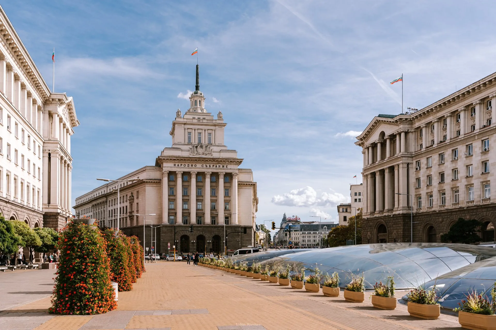

Visitors traveling to Bulgaria can enjoy a safe and memorable experience by keeping a few helpful tips in mind. Understanding local customs, transportation options, and basic travel information can make a trip more comfortable and enjoyable.
The official language of Bulgaria is Bulgarian, which uses the Cyrillic alphabet. While many people in tourist areas speak English, learning a few basic Bulgarian phrases can be helpful and appreciated by locals.
The currency used in Bulgaria is the Bulgarian lev. Credit cards are widely accepted in cities and tourist destinations, but it is still useful to carry some cash when visiting smaller towns or rural areas.
Bulgarian people are generally known for their hospitality and friendliness. Visitors are often welcomed warmly and may be invited to experience local traditions, foods, and celebrations.
Travelers should also take time to explore different regions of the country. From historic cities and mountain landscapes to coastal resorts and traditional villages, Bulgaria offers a wide range of experiences that make every journey unique.
Bulgaria can be visited throughout the year because each season offers unique experiences for travelers. The best time to visit often depends on the type of activities a visitor would like to enjoy.
Spring is a beautiful season in Bulgaria, when flowers begin to bloom and temperatures become comfortable for sightseeing and outdoor activities. Many festivals and cultural events take place during this time.
Summer is the peak tourist season, especially along the Black Sea coast. Visitors come to enjoy warm weather, beach activities, and lively resort towns. This season is ideal for swimming, boating, and exploring coastal destinations.
Autumn is another excellent time to visit because of the colorful landscapes and mild weather. Many rural regions celebrate harvest festivals and traditional cultural events during this season.
Winter attracts tourists interested in skiing and winter sports. Bulgaria’s mountain resorts offer snowy slopes, modern facilities, and beautiful winter scenery.